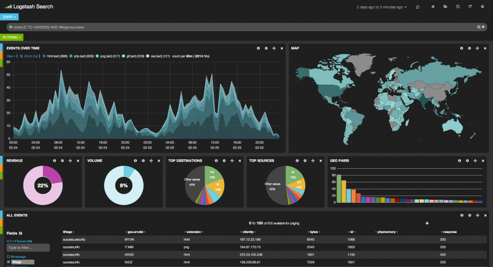

楽しいElasticsearch
Technology Media Lab. MIT project
Created by Motohashi Yusuke
what is it?
エンジニアのための
Elasticsearchの導入方法の話
はしません
what is it?
マーケッターのための
Elasticsearchの導入事例の話
もしません
what is it?
営業の方のための
Elasticsearchの基礎知識の話
もあんまりしません
what is it?
僕が感じた可能性の話をします
Contents
- 自己紹介
- Elasticsearchってなに
- Elasticsearchってなに?
- TTでの利用方法
- 何が嬉しいの
- 時間が余ったら
自己紹介
| key | value |
|---|---|
| 名前 | 本橋 佑介(もとはし ゆうすけ) |
| 所属 | TechnologyMediaLab. |
| 好きな色 | あか |
Contents
- 自己紹介
- Elasticsearchってなに?
- TTでの利用方法
- 何が嬉しいの
- 時間が余ったら
Elasticsearchってなに?
- 全文検索?
- 検索サーバー?
- 分散型?スケーラブル?
- スキーマフリー?
- サーバーのアクセスログの可視化?
用語からしてよくわかりません!!!!
Elasticsearchってなに?
全文検索?
全文検索(Full text search)とは、
コンピュータにおいて、複数の文書(ファイル)から特定の文字列を検索すること。
「ファイル名検索」や「単一ファイル内の文字列検索」と異なり、「複数文書にまたがって、文書に含まれる全文を対象とした検索」という意味で使用される。
(Wikipediaより)
日本語訳より英語のほうがわかりやすいね
Elasticsearchってなに?
検索サーバー?
MySQLやPostgreSQLなどのRDBMSとは違う思想
はやい!すごい!検索以外に使えない!!!
Elasticsearchってなに?
分散型?スケーラブル?
データ量が多くなると複数台構成となる。 が、Elasticsearchはクラスタ構成が前提で設計されてるためデータの分散やレプリカ等が自動で実行される。
嬉しい!楽ちん!怖くない!!
Elasticsearchってなに?
ログの可視化?
kibana
かっこいい!!
Elasticsearchってなに?
まとめると…
- いろんな文字列を
- 細かくして検索するのに特化した
- 大規模データにも対応する
- 分析ツールがかっこいい
データベースみたいなやつ
Contents
- 自己紹介
- Elasticsearchってなに?
- TTでの利用方法
- 何が嬉しいの
- 時間が余ったら
teratailでの利用方法
関連したコンテンツの表示
before: タグの一致度検索
→文字列が一致しない
after: more like this Query
→文字列で一致させる
結果をレーベンシュタイン距離で測定しようとしたけど日本語微妙
teratailでの利用方法
実装予定のもの
- サイト内検索機能
- ユーザ検索
- 投稿時類似質問検索機能
ログ系で作りたいもの
- ログ分析基盤の独自実装
- 行動によるユーザ属性のgrouping
- 集計業務の自動化
作りたいっていうのはタダ
teratailでの利用方法
サイト内検索機能
全文検索
タグでの一致、文言にweightを設定することによって
RDBMS単体で実現できない検索を可能にする
teratailでの利用方法
ユーザ検索
これも全文検索
名前やタグでの検索だけでなく
- 登録情報が似たようなユーザ
- 登録時期が似たようなユーザ
- 行動ログが似たようなユーザ
での検索も可能
teratailでの利用方法
投稿時類似質問検索機能
これも全文検索
重複コンテンツが出来ないようにリアルタイムでの警告を出す
teratailでの利用方法
ログ分析基盤の独自実装
- 現行のログ基盤を保持したまま実装する
- データ量によっては高速化が可能
- ローカライズによる分析の工数削減
teratailでの利用方法
行動によるユーザ属性のgrouping
- Aggregations APIを利用した検索
- 上位N%のユーザのXXXを検索などの検索容易
- 継続率分析などの可視化
Contents
- 自己紹介
- Elasticsearchってなに?
- TTでの利用方法
- 何が嬉しいの
- 時間が余ったら
どんな嬉しい事が出来るの?
例えば、「Geo Distance Filter」
{
"filtered" : {
"query" : {
"match_all" : {}
},
"filter" : {
"geo_distance" : {
"distance" : "5km",
"pin.location" : {
"lat" : 34.994401,
"lon" : 135.783283
}
}
}
}
}清水寺から5km以内の検索
近くの○○検索が容易に実装できる
どんな嬉しい事が出来るの?
例えば、「elasticsearch-analysis-icu」
- 半角・全角、依存文字を統一化
- ・㍉ =>「ミ」「リ」、㌢ =>「セ」「ン」「チ」
ユーザ入力の原稿をどうこうする必要がない!!
どんな嬉しい事が出来るの?
例えば、「Fuzzy Like This」
英語が苦手なのがバレない!!!
どんな嬉しい事が出来るの?
例えば、「Kuromoji plugin」
→日本語形態素解析
- 「本人」で検索しても「日本人」がHitしない
- 「本橋」で検索しても「日本橋」がHitしない
- 「2月」で検索しても「12月」がHitしない
- 「本橋」で検索しても「日本橋」がHitしない
嬉しい!!!
どんな嬉しい事が出来るの?
例えば、「Synonym Token Filter」
Synonymシノニム(synonym)とは、同意語、別名のこと。 まれに類語を含むこともある(英語のsynonymは類語を含む)。
(wikipedia)
「Tokyo」で検索すると「東京」「首都」などでHit出来る!
嬉しい!!
ご静聴ありがとうございました
Contents
- 自己紹介
- Elasticsearchってなに?
- TTでの利用方法
- 何が嬉しいの
- 時間が余ったら
ログ分析基盤づくりについて
どんなデータを集めよう
- Apache Error Log
- Apache Access Log
- Mysql Slow Log
- Application Log (Behavior Log) ※独自形式
- Application Log for hadoop ※独自形式
あたりを分析対象にすると捗る
ログ分析基盤づくりについて
type(schema)づくりについて
- typeはRDBMSでいうところのTable
- apache2, apache_error,tsv,jsonなどの
フォーマッターを利用して収集(fluentdがすごい) - Elasticsearch側でmapping指定しなくても
適当に集計できる - とりあえずデータ流すだけで使える
(文字列の分割などは後からでも出来る)
(動かすまでに時間かかると萎える)
(動かせ)
ログ分析基盤づくりについて
Hadoopの資産を再利用する

HDFSの代替にもできる
まとめ
- Elasticsearchでサービスの幅が広がる
- 出来ることを調べるだけで発想の幅が広がる
- サービスを変えられる(かもしれない)
- ログの分析が簡単にかっこよくなる